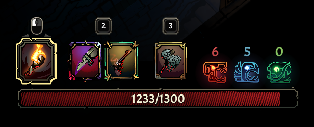

ST
AT
US

Status são umas das formas de aumentar o poder do player dentro de Curse of The Dead Gods através de valores diretos. Cada Status tem sua categoria, entregando efeitos
únicos:
CONSTITUIÇÃO
Esse status representa diretamente a quantidade de vida que você terá a mais. A cada 1 ponto adicionado em Constituição, nosso
personagem recebe 50 a mais de vida.
Esse é um exemplo de uma barra de vida sem nenhum ponto em Constituição:
Esse é um exemplo de uma barra de vida com 6 pontos em Constituição:

DESTREZA
Esse status representa diretamente a quantidade de dano que você terá a mais. A cada 1 ponto adicionado em Destreza, nosso personagem
recebe 2% a mais de dano.
PERCEPÇÃO
Esse status aumenta a quantidade de ouro recebido de todas as fontes. A cada 1 ponto adicionado em
Percepção, nosso personagem recebe 5% a mais de ouro.
Esse status também aumenta a chance de caírem equipamentos extras de inimigos derrotados.
VOLTAR PARA A PÁGINA PRINCIPAL